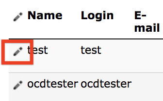
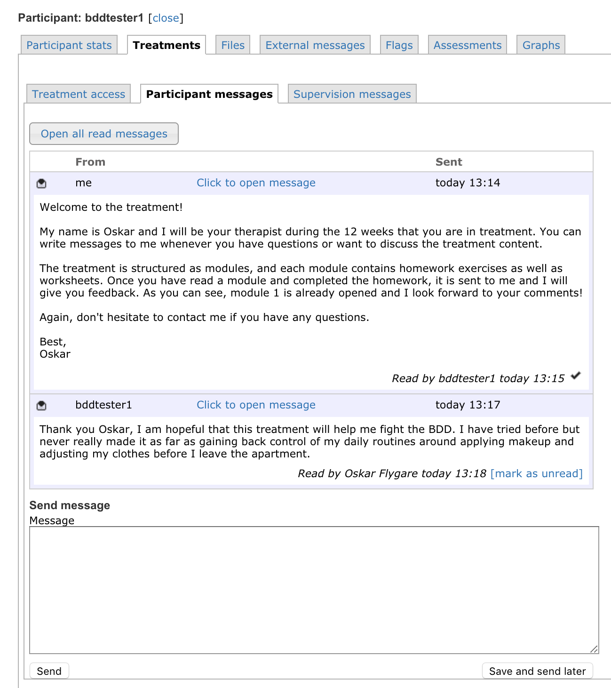
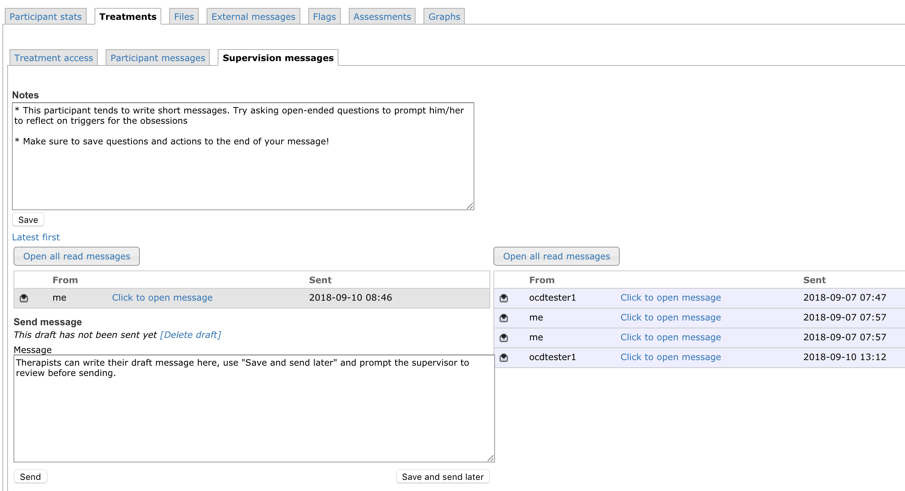
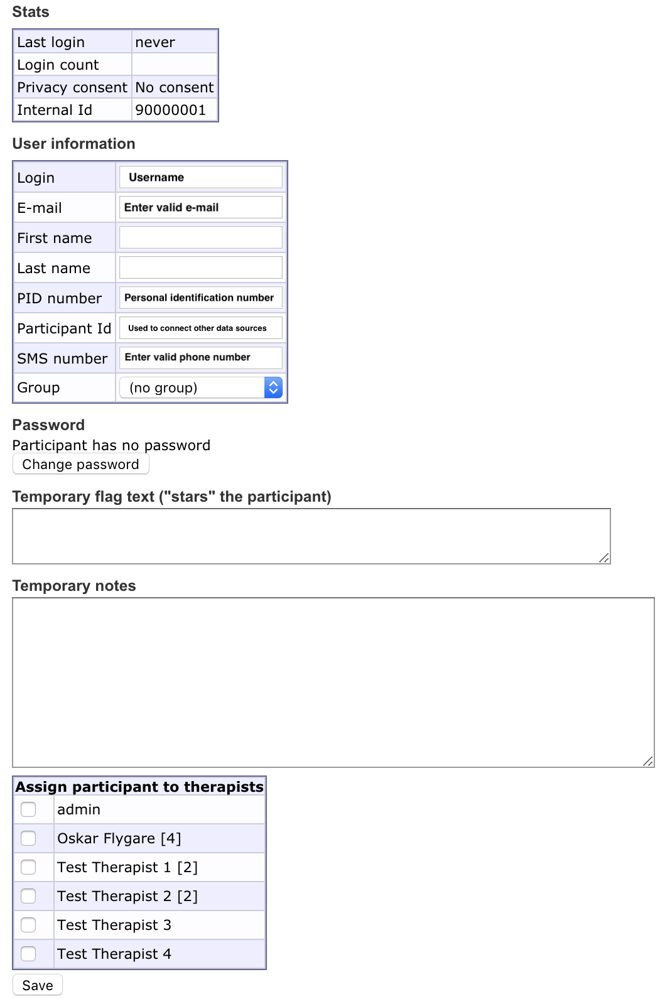

Chapter 2 Using the technology
2.1 Quick start
If you want to explore the platform yourself, you can use test therapist and test patient logins provided to try out the features. We generally recommend that you use the platform while reading this manual, to test features as you go along.
Therapists access the platform via this URL: webcbt.tst.ki.se/t1
2.2 Platform use overview
There are five common scenarios during the course of treatment:
- Responding to messages
- Reviewing homework
- Opening new treatment modules
- Reviewing questionnaires
- Responding to warning flags
These actions can all be accessed in the participant overview, shown below:

A typical day as a therapist includes responding to one or more messages, reviewing homework and opening up a new module. Once in a while therapists contact inactive patients or assess a warning flag.
The majority of day to day tasks are accessed via the Participant search menu. The menu is located at the left-hand side of the browser window, and clicking Participant search will get you back to the participant overview. To access individual participants, click the pencil next to their name.

2.3 Navigation
The menu bar on the left may expand depending on administrative rights. Other parts of the menu include administrative settings such as editing treatment content, editing assessments, changing the way flags appear, and changing settings to the site itself. These will not be relevant to most therapists and we do not cover them in detail here. Just remember that you can always go back to the default view by navigating to Participant search in the left-hand menu.

2.4 Filtering the participant overview
To get a quick overview of a long participant list, filter patients that meet certain criteria, for example belonging to certain groups in treatment of certain treatments. There is a button called Selection above the participant list. We recommend that therapists use the “My participants” filter to show only patients assigned to them.

2.5 Writing and responding to messages
A new message from a patient will be indicated by this icon turning red  . Navigate to Treatments -> participant messages to view the message and write a response. See the chapter Being an effective ICBT therapist for guidelines on how to write messages.
. Navigate to Treatments -> participant messages to view the message and write a response. See the chapter Being an effective ICBT therapist for guidelines on how to write messages.

2.6 Homework review
A completed homework assignment is shown in the Homework column in the participant overview. Click the pencil next to the participant and navigate to Treatments -> Treatment access to review the homework and mark it as completed.
Completed homework assignments will show up for review in the treatment overview
Internet-based CBT relies heavily on self-directed activities and homework review is a good time to check whether the patient has grasped important concepts and are able to apply them to their own situation.
2.7 Treatment modules
When a patient has read a module and completed the corresponding homework assignment(s), they are ready for the next module. To grant access to a new module, navigate to Treatments -> Treatment access and check the box next to the next module. A date will appear next to the module indicating when the module was activated. Patients automatically get a text message when they get access to a new module.

Check the box to the left to open a new module
The number of modules and weeks in treatment varies between treatment protocols but a rough guideline is that patients should progress through one module per week. Some treatment techniques, like exposure with response prevention, are spread out across several modules to emphasise their importance and give participants sufficient time to get started on the technique.
2.8 Questionnaires
Before, during, and after treatment, patients are asked to fill out questionnaires. When new questionnaires are activated they appear as the patient logs onto the platform. Therapists can review and change which questionnaires should appear at which day in Assessments but we recommend that therapists stick to the standard schedule whenever possible.
Questionnaires for each patient are listed in this view, click the paper icon to view responses
2.9 Warning flags
The ICBT platform will display a warning flag next to a patient’s name for certain events. The most common flags are due to inactivity or non-response to questionnaires. These serve as prompts to therapists to take further action, for example reaching out by phone to a patient or sending them another text message reminder.
Once a warning flag has been noticed and dealt with, indicate the action taken in the temporary flag text box in the Participant stats tab (shown below). Please note, however that inactivity flags automatically disappear once then patient uses the platform again.

Temporary flag texts aid communication between therapists when they manage flags
2.9.1 Common warning flags
- Patient has not logged in for 7 days:

- Patient has not written a message in 7 days:

- Patient has not responded to measurement in time:

- Patient has no assigned therapist:

- Treatment ends within 1 week:

- Treatment has ended:

2.9.2 Suicidality warning flags
The most important type of warning flag is due to heightened suicidality. The platform is configured to display this flag if a patient responds 2 or 3 on the suicidality question in PHQ-9.
- Warning flag to indicate suicidal ideation:

Local clinical guidelines may overrule the general course of action outlined here.
- Call the patient immediately
- Explain that it is standard procedure to call when a patient indicates heightened suicidal ideation
- Follow a hierarchy of questions, such as M.I.N.I. interview, to assess level of suicidality
- If the immediate risk is low (i.e. PHQ-9 score of 2), make an agreement to check back in with the patient in a few days and give them contact information to the nearest 24-hour psychiatric care unit
- If the immediate risk is high (i.e. PHQ-9 score of 3), advise the patient to seek immediate help at your centre or at a 24-hour psychiatric care unit.
Once the level of suicidality is deemed to be low enough to not require further attention, therapists can remove the warning flag under the Flags tab for the participant.

Flags are listed under the Flags tab, click on the pencil to edit flag.
Once you have managed a flag, you can make a note that lists actions taken, and remove the flag.
2.10 Supervision
Supervision through the platform makes it easy to connect feedback from the supervisor to specific therapist messages and actions. The supervision page is found at Treatment -> Supervision messages for each participant.

2.11 Assign new therapist
The most typical scenario is that each patient is treated by one therapist throughout treatment, but it is not uncommon for a second therapist to act as backup if the primary therapist is not available.
To assign another therapist or change therapist, navigate to the patient in question and click the Participant stats tab. At the bottom of that page, there is a list of therapists and those assigned to the patient will have a checkmark next to them. Simply un-check whoever is to be removed and check whoever is to be assigned the patient.
The number 2 next to Oskar Flygare indicates that he is assigned to 2 patients
2.12 Create new patient login
To create a new patient login on the platform, go to the participant overview by selecting Participant search in the left-hand menu. Select Create new participant at the bottom of the participant list.

Fields not needed are:
- Participant ID: Internal ID for the platform. Usually not needed.
- Password: New patient logins are created without passwords. The first time the patient logs onto the platform they will be asked to generate a password
- Temporary flag text: Usually not needed at creation but might come in handy later for communicating between therapists
- Temporary notes: Usually not needed
2.13 OCD-NET and BDD-NET for patients
We encourage therapists using OCD-NET and BDD-NET to login with one of the test patient accounts to see what the platform looks like for patients. See below for a quick overview of the registration process.
2.13.1 Access
Patients access the platform from the Patient-URL, which is different from the therapist URL.

Patients can click the “I lost my password” text to receive a new password.
2.13.2 Using the technology as a patient
Landing page for patients
The landing page for patients includes basic information about the treatment, whether they have been granted access to new modules or have received new messages.
In the menu bar at the top of the page, patients can easily navigate the platform, view treatment content, report problems, and see the Privacy Notice.
Messages in the patient platform
Module text
Homework assignments
Worksheets, patients click the + sign to add new tabs with information
Patients can report problems, which will display as a flag in the therapist view